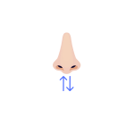
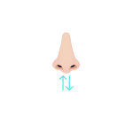

Welcome to Simple Breathwork!
Welcome to Simple Breathwork, your sanctuary for harnessing one of the most powerful, yet often overlooked, tools for well-being: your breath. We believe that everyone deserves easy access to techniques that can instantly shift their mental and physical state. Forget complicated apps or expensive courses; this platform offers straightforward, visual guides to scientifically-backed breathing patterns designed to reduce stress, enhance focus, manage anxiety, and even boost your energy levels naturally. Dive into potent methods like the calming Box Breathing, the deeply relaxing 4-8 "Instant Zen" rhythm, or the invigorating Wim Hof technique. Each card below represents a unique path to transforming how you feel, moment by moment. Our goal is to empower you with simple, effective breathwork tools you can use anywhere, anytime. Choose an exercise that resonates with your needs today and experience the profound impact of intentional breathing. It's FREE to use without any hidden fees, enjoy!
Box Breathing
Calm Your Mind
Box Breathing involves inhaling, holding, exhaling, and holding your breath for equal counts. This technique activates the parasympathetic nervous system, reducing stress and anxiety while enhancing focus. Practice for 5 minutes, 1-2 times daily, to feel immediate relaxation and improved emotional regulation.
Instant Zen
Find Your Balance
Instant Zen emphasizes a longer exhale compared to the inhale, promoting deep relaxation. This method activates the parasympathetic system, helping you quickly reduce stress and anxiety. Start with 5-10 minutes daily, and you’ll notice calming effects almost immediately.
Wim Hof Method
Boost Your Resilience
The Wim Hof Method combines deep breathing with breath holds, stimulating both the sympathetic and parasympathetic systems. This technique can enhance oxygen uptake, increase energy, and even boost immune function over time. Practice for 15-20 minutes once a day to experience increased vitality and stress resilience.
Belly Breathing
Deep Relaxation
Focus on breathing deep into your belly, allowing it to gently rise on the inhale and fall on the exhale. This engages the diaphragm for calming, efficient breaths, activating the body's relaxation response. Inhale slowly through your nose, exhale slowly through your nose or mouth. Practice for 5-10 minutes, 1-2 times daily or whenever feeling stressed, to notice reduced tension and increased calm..
Buteyko Breathing
Calm & Balance
Inspired by Buteyko principles, this exercise uses gentle, light nasal breathing with brief, comfortable pauses after exhaling. It aims to normalize breathing patterns and gently increase CO2 tolerance, promoting calm and nervous system balance. Always breathe softly in and out through your nose. Consistency is key; practice for 5 minutes, 2-3 times daily, focusing on ease, to potentially improve respiratory comfort.